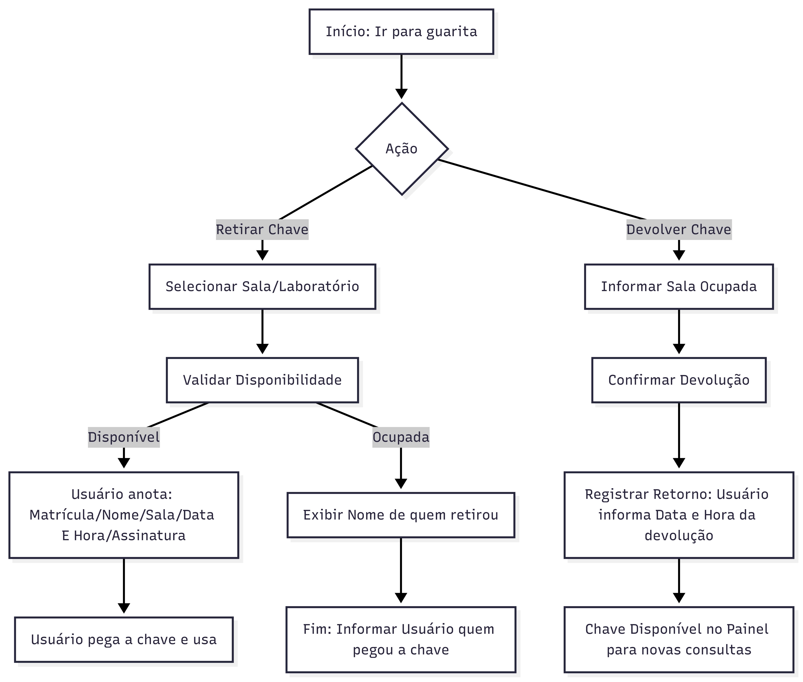
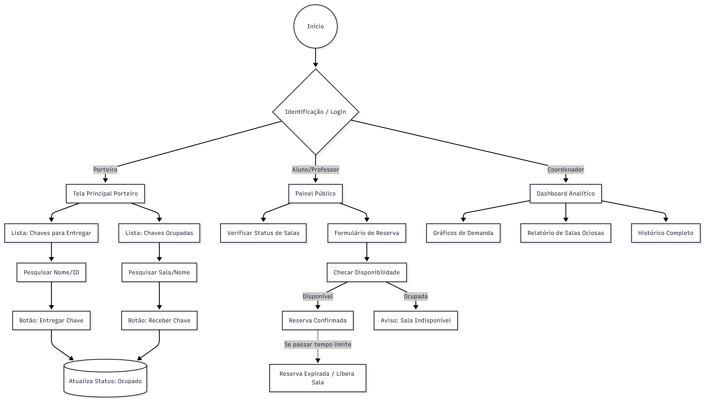
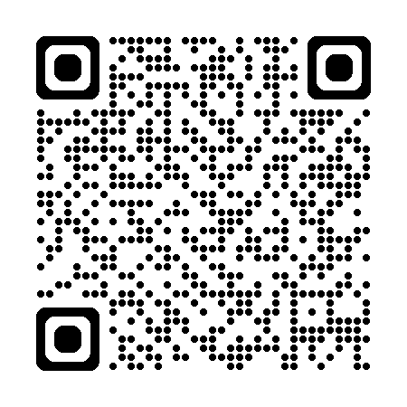

Chave Fácil
Gestão de Chaves · IFBA
Solução simples, acessível e de baixo custo para substituir o controle manual na guarita — com rastreabilidade, reserva prévia e dados de uso.
- Diagnóstico do processo atual
- Proposta por perfil (guarita, docente, coordenação)
- Arquitetura, viabilidade e demonstração ao vivo
Cenário
O IFBA possui 152 ambientes (102 salas de aula, 40 laboratórios, 10 salas de reunião). O controle de chaves é feito em caderno na guarita.
Nome, matrícula, sala, data/horário e assinatura.
Registro manual do horário novamente.
Rastreabilidade · visibilidade remota · reserva prévia · histórico de uso.
Baixo orçamento, tecnologia simples de manter e operação acessível para todos os perfis.
Quem usa o processo hoje
A solução precisa funcionar na prática para cada perfil de usuário.
Celular só para WhatsApp e funções simples. Troca de turno sem visão de quem retirou chave. Interface tem que ser óbvia.
Já perdeu aula por laboratório trancado. Não consegue ver disponibilidade nem quem está com a sala.
Reserva sala de reunião toda semana sem processo formal — depende de comunicação informal.
Reclamações de perda de chave e conflitos. Sem dados de demanda, ociosidade ou horários de pico.
Análise do problema
O controle manual gera falhas operacionais e impede gestão baseada em dados.
- Perda de informações e rasuras no caderno
- Dificuldade para localizar responsáveis
- Sem controle da disponibilidade das salas em tempo real
- Sem histórico organizado para auditoria ou coordenação
- Impossível checar sala sem ir à guarita
- Sem visão de horários de maior demanda nem salas ociosas
Impedimentos e regras de reserva
Porteiro: celular básico — evitar fluxo
complexo.
Orçamento: solução de baixo custo (infraestrutura gratuita na
fase inicial).
Disponibilidade da sala no horário solicitado.
Com quem esteve a chave no último horário reservado naquela sala.
Nome + cargo (aluno, professor, coordenador, porteiro) + identificador: matrícula, SIAPE ou CPF.
Tempo limite de atraso: reserva expira se a chave não for retirada no prazo.
Fluxograma — processo atual
Fluxo manual na guarita (caderno + assinatura).
Clique na figura ou pressione Z para ampliar. Esc ou clique fora fecha.

Proposta de solução
Sistema web com telas separadas por perfil — na guarita, fluxo de busca + toque, pensado para o dia a dia do porteiro.
Interfaces por perfil
Fonte ampliada, botões grandes, mobile-first. Fluxo em 2 toques: buscar → confirmar entrega/devolução.
Status da chave antes de ir ao campus. Reserva com validação de conflito de horário.
Gráficos de salas mais demandadas, ociosas e janelas de maior uso — apoio à gestão de espaços.
QR Code em cada porta com status da sala · alertas de devolução · painel em TV na guarita · relatórios exportáveis.
Fluxograma — processo proposto
Reserva → retirada na guarita → uso → devolução → histórico e relatórios.
Clique na figura ou pressione Z para ampliar. Esc ou clique fora fecha.

Decisões técnicas (ADR)
Tecnologias escolhidas para o sistema: manutenção simples, baixo custo operacional e uma única aplicação para todos os perfis.
| Camada | Tecnologia | Por quê |
|---|---|---|
| App | Next.js 15 + React 19 | Uma app: painel, guarita e dashboard |
| UI | Tailwind 4 + shadcn 4.7 | Mobile-first, botões grandes |
| Backend | Server Actions | Menos código que REST separada |
| Banco | PostgreSQL + Prisma 6.19 | Reservas, histórico e SQL |
| Deploy | Vercel + Neon | Free tier no início |
Melhorias futuras sugeridas
- QR Code em cada porta — link direto para o status da chave daquela sala (livre/ocupado)
- Notificações — lembrete de devolução e confirmação de reserva
- Integração institucional — login único (SSO) e exportação de relatórios
Viabilidade e demonstração
A proposta é viável na prática — e já existe um protótipo funcional para comprovar isso ao vivo.
Alta — stack web consolidada pela equipe.
Alta — R$ 0 na fase inicial (hospedagem gratuita).
Média — treinamento do porteiro em 1–2 horas.
3–4 semanas para o sistema completo. Piloto em 6 salas, depois expansão para 152.
Uso estimado no campus: ~500–2.000 acessos/dia · pico de 30–80 pessoas entre aulas. Infraestrutura gratuita tende a atender o campus por 6–18 meses antes de qualquer custo.
Experimente agora

chave-facil.vercel.app
Conclusão
O Chave Fácil substitui o caderno por um fluxo digital simples: o porteiro opera em segundos, docentes reservam com antecedência e a coordenação passa a decidir com dados — sem depender de processos manuais.
Rastreabilidade total das chaves · consulta remota de disponibilidade · menos conflitos de uso · histórico para gestão de espaços · redução de perdas e atrasos em aulas.
Expiração automática de reservas atrasadas · cadastro das 152 salas · piloto em 6 ambientes · notificações e QR nas portas (fase 2).
Obrigado pela atenção!